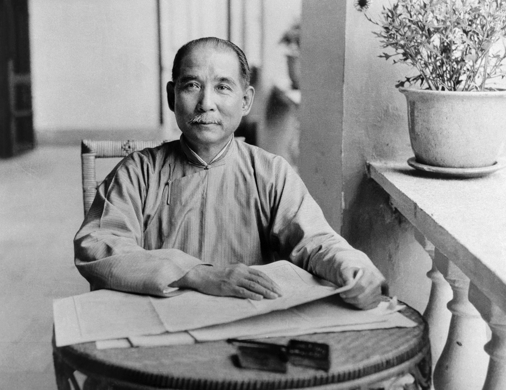
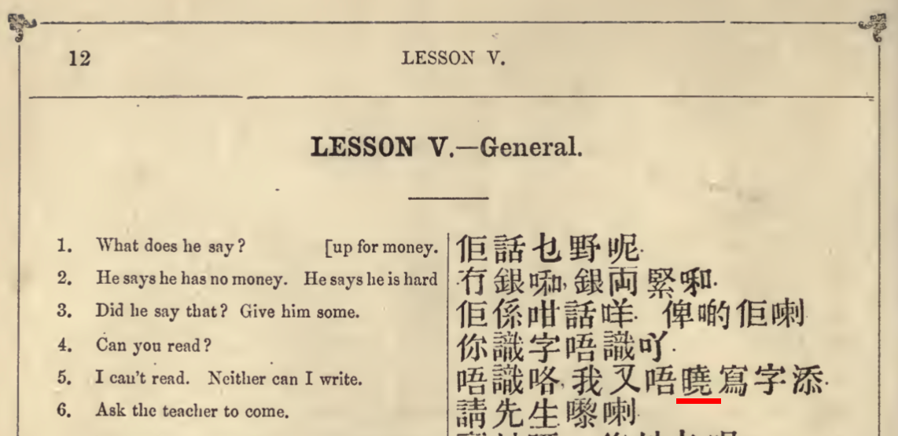
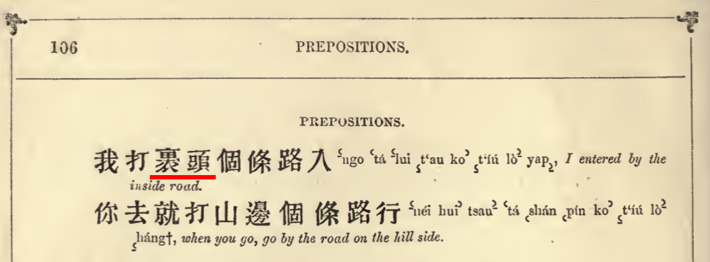

class: center, middle # Lexical Choices in <br> Dr. Sun Yat-Sen’s <br >1924 Cantonese Audiorecording 5th Workshop on Innovations in Cantonese Linguistics <br>The Ohio State University, April 19th, 2020 <br> <div class="row"> <div class="column">Marjorie K.M. Chan <br>The Ohio State University </div> <div class="column">Tsz-Him Tsui <br >(OSU alumnus) </div> </div> --- # Agenda 1. Background - Data source? - Why study? -- 2. Methods -- 3. Analysis - vs contemporary Hong Kong Cantonese (Luke & Kwong 2015) --- # Background  Sun Yat-sen in 1924 (from [Wikimedia Commons](https://commons.wikimedia.org/wiki/File:Sun_Yat-sen_1924_Guangzhou.jpg)) --- # Background ## Sun Yat-sen - 孫文 / 孫中山 / 孫逸仙 (1866 - 1925) - Identified with the 1911 Xinhai revolution that toppled Qing Dynasty (1644-1911) - Three Principles of the People: - Nationalism 民族, democracy 民權, <br>livelihood of the people 民生 - "Father of the Nation" - 1st leader of Kuomintang, <br> 1st president of the Republic of China --- # Background ## Sun Yat-sen's linguistic background |Age|Where|Varieties| |:---|:---|:---| |1866-1879 |Xiangshan County (香山縣) |Zhongshan Cantonese| -- |1879-1883 |Honolulu, Kingdom <br>of Hawaiʻi|English<br>Zhongshan Cantonese| -- |1879-1883 |Hong Kong, Guangzhou, <br>Macau|(Old) Standard Cantonese<br>Zhongshan Cantonese| -- |Later|Japan, Europe, N. America, <br>SE. Asia|???| --- # Background ## National linguistic background (Chen 1999) - 1911: Act of approaches to the unification of the national language <br>(統一國語方法案) - Based on the Beijing variety -- - 1912-1913: <br>Commission for Unifying Reading Pronunciation (讀音統一會) -- - 1919: <br>National Pronunciation Dictionary (國音字典) -- So it's likely that Dr. Sun knows some "Standard Spoken Chinese" / Mandarin --- # Background Our data source: Sun Yat-sen's 1924 speech <audio controls> <source src="links\sun-1924-snippet.mp3" type="audio/mpeg"> Your browser does not support the audio element. </audio> <iframe src="links/Cantonese_transcript_from_gramophone_records_20048.pdf" alt="some text" width="100%" height="375px"> --- # Background ## Sun Yat-sen's 1924 speech - Data source - May 30th, 1924, by Shanghai's *China Evening Post* -- - Two speeches: <br>Mandarin & Cantonese -- - Topic: <br>National salvation -- - Audience for the Cantonese speech: <br>Broad, Cantonese-speaking audience, within China and overseas --- # Methods Previous studies focused on Dr. Sun's phonology: - On then-ongoing sound changes (Cheng 2011) - On influence from various Chinese varieties <br>(Chan 2016, 2017, 2019) -- ## Current research questions ### Q1: Was Dr. Sun's word choice influenced by various Chinese varieties? ### Q2: How is his word choice from 1924 different from contemporary Cantonese? -- → Insights to differences between Old and Contemporary Cantonese, as well as the cultural/political backdrop --- # Methods HKCanCor (Luke & Kwong 2015) as the baseline... - 30 hours of recordings of Hong Kong Cantonese - mainly from around 1997 and 1988 - Conversations in lab recording sessions + radio chat shows -- ...assessed via PyCantonese, in CHAT format (Lee 2015): *XXA: 喂 遲 啲 去 唔 去 旅行 啊 ? %mor: e|wai3 a|ci4 u|di1 v|heoi3 d|m4 v|heoi3 vn|leoi5hang4 y|aa3 ? *XXA: 你 老公 有冇 平 機票 啊 ? %mor: r|nei5 n|lou5gung1 v1|jau5mou5 a|peng4 n|gei1piu3 y|aa3 ? --- # Methods Dr. Sun's 1924 speech manually segmented, transcribed, loaded into PyCantonese: *SUN: 我哋 大家 係 中國人 ， %mor: r|ngo5dei6 r|daai6gaa1 v|hai6 nz|zung1gwok3jan4 , *SUN: 知道 唔知道 呢 ？ %mor: v|zi1dou3 v|m4zi1dou3 y|ne1 ? --- # Methods Compared relative frequency of words: $$\text{Relative frequency of a target word} = \frac{\text{num of target words}}{\text{total num of words}}$$ Again, with HKCanCor being baseline... -- ### "Unusual choices of words" = 1. Words that appear in Dr. Sun's speech **5× more than in HKCanCor**? 2. Words that appear in Dr. Sun's speech, but **never in HKCanCor**? -- ### Where did such words come from? --- # Analysis ## (Some) words that were used 5× more than HKCanCor: ### 1. Identity, "we" vs "them" - 我哋 "we" - 大家 "everybody" - 中國人 "Chinese" - 中國 "China" - 國家 "Nation" - 海外 "overseas" - 外國人 "foreigner" - 內地 "inland / mainland China" - 外國 "foreign country" --- # Analysis ## (Some) words that were used 5× more than HKCanCor: ### 2. Length of history of Sinitic / "Hua" culture, vs the current national crisis - 幾千 "thousands" - 年 "years" - 今日 "today" - 後來 "later" - 時侯 "moment, time" - 時代 "era" --- # Analysis ## (Some) words that were used 5× more than HKCanCor: ### 3. Solutions to the current crisis, to save the country - 政府 "government" - 精神 "spirit" - 贊成 "to concur" - 方法 "method" - 救 "to save" - 危險 "danger" - 發揮 "to bring out" - 新 "new" - 思想 "thoughts, philosophy" --- # Analysis ## In short, that Dr. Sun emphasized on 1. How **we Chinese** 2. with the **great Chinese culture, facing the the current national crisis** 3. **resolve the situation, and save the country?** -- ## How about words that Dr. Sun used, but do not appear in Contemporary Cantonese? --- # Analysis ## (Some) words that never appeared in HKCanCor: ### 1. Monosyllabic variants - 國 "nation" -- *SUN: 中國 現在 就 變成 係 世界上 頂貧頂弱 嘅 國 ， Note: In Contemporary Cantonese, only the disyllabic 國家 is used. --- # Analysis ## (Some) words that never appeared in HKCanCor: ### 2. Perhaps Old(er) Cantonese - 曉得 "to know" (*contra* 識得/知道) - 裡頭 "inside" (*contra* 裡面/入面) Note: Both 曉 and 裡頭 appear in Ball (1888). --- # Analysis Note: Both 曉 and 裡頭 appear in Ball (1888).   --- # Analysis ## (Some) words that never appeared in HKCanCor: ### 3. Seems to be Standard Chinese - 現在 "now" (cf. 宜家/現時 in Ball 1888) -- - 欺負 "to bully" (*contra* 『蝦』) -- - 看不上...人樣 "not like a human" (cf. 唔 in Ball 1888; Ball only has 不 in opera-like context e.g. 誰不知) -- - 諸君 "you (<span class="referencesmallcaps">pl</span>)" (*contra* 你哋/大家) -- - 想想 "to think" (*contra* 諗諗; Ball 1888 uses 想 as “to want”, as in contemporary Cantonese) --- # Analysis ## (Some) words that never appeared in HKCanCor: ### 4. Creative / literary vocabulary - 頂富頂強 "wealthiest and strongest" - 頂貧頂弱 "poorest and weakest" - 民窮財盡 "destitute people and depleted finance" - 同心協力 "unitedly and collectively" - 不日 / 近日 "near future" - 刻書 "to inscribe (an idea)" Most are traditional 2-/4-character sets; some are possibly Dr. Sun's own creation. Perhaps to grasp listeners' attention? --- # Analysis ## (Some) words that never appeared in HKCanCor: ### 5. Other politics-related vocabulary - 人民 "the people" - 國事 "national affair" - 進貢 "to tribute" - 征服 "to conquer" - 滿州 "Manchuria" - 國民 "a national" - 革命 "revolution" - 三民主義 "Three Principles of the People" --- # Conclusion Differences between Dr. Sun's 1924 speech vs contemporary Cantonese: - Plenty of political / ideological vocabulary - Quite close to contemporary Cantonese, yet - Some uses of Old(er) Cantonese - Some uses of Standard Chinese (perhaps for formality) - Some creative / literary vocabulary (perhaps as attention grabber) --- # References <div class="referencefont"> <span class="referencesmallcaps">Ball, J. Dyer.</span> 1888. *Cantonese Made Easy (2nd Ed.).* Hong Kong: Printed at the 'China Mail' Office. <span class="referencesmallcaps">Chan, Marjorie K.M.</span> 2016. Language and variation in performance: Sun Zhongshan’s (孫中山) 1924 Cantonese speech. Paper presented at the 28th North American Conference on Chinese Linguistics (NACCL-28). 5-8 May 2016. Brigham Young University, Provo, Utah. <span class="referencesmallcaps">Chan, Marjorie K.M. 2017.</span> Dr. Sun Yat-sen’s 1924 Cantonese speech: A small corpus-based study of contact-induced language variation. Paper presented at the 22nd International Conference on Yue Dialects. 8-9 December 2017, Education University of Hong Kong, HK. <span class="referencesmallcaps">Chan, Marjorie K.M.</span> 2019. Dr. Sun Yat-Sen’s 1924 Cantonese Audiorecording: The Interplay of First and Second Dialect Acquisition. Paper presented at the OSU-Tsukuba Joint Linguistics Workshop, The Ohio State University, Columbus, Ohio. <span class="referencesmallcaps">Chen, Ping.</span> 1999. *Modern Chinese: History and Sociolinguistics*. Cambridge University Press. <span class="referencesmallcaps">Cheng, Siu Kei.</span> 2011. Cantonese at the Revolutionary Ages: A Phonetic Analysis of a Sound Recording of Dr. Sun Yat-sen. Paper presented at the 16th International Conference on Yue Dialects, the Hong Kong Polytechnic University, Hong Kong. <span class="referencesmallcaps">Lee, Jackson L.</span> 2015. [PyCantonese](http://pycantonese.org): Cantonese linguistic research in the age of big data. Talk at the Childhood Bilingualism Research Centre, Chinese University of Hong Kong. <span class="referencesmallcaps">Luke, Kang Kwong;</span> and <span class="referencesmallcaps">Oi Yee Kwong.</span> 2015. The Hong Kong Cantonese Corpus: Design and Uses. *Linguistic Corpus and Corpus Linguistics in the Chinese Context*, 312-333. The Chinese University of Hong Kong Press. <div> --- class: center, middle # Thank you! # Question? Slides and data available at <br />https://github.com/tszhim-tsui/2019-SunYatSen